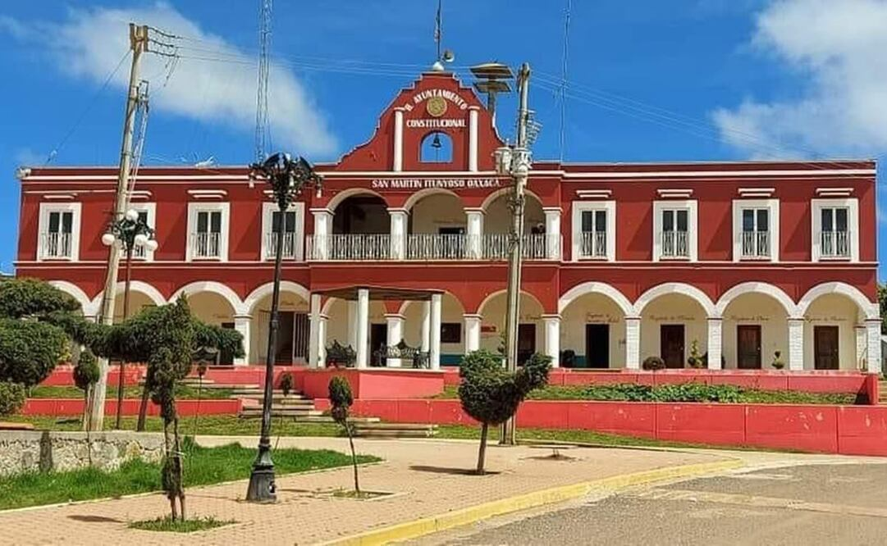

CECYTEO.EDU.MX
CECYTEO.EDU.MX  CECYTE.emsad
CECYTE.emsad  MUSEODETEXTIL
MUSEODETEXTIL

se dice que un hermano, Andrés, se quedó en San Andrés
Chicahuaxtla, otro hermano,Juan, se fue a San Juan Copala, y el tercer
hermano, Martín, fundó lo que hoy es San Martín Itunyoso. Estos
tres hermanos fueron los encargados de enseñar a las mujeres
del pueblo los materiales y el proceso para elaborar el huipil, una
prenda esencial que hasta hoy se sigue utilizando. A lo largo del
tiempo, las mujeres del pueblo aprendieron a tejer el huipil no solo
como prenda para cubrirse del frio, sino también como una
vestimenta cultural. En épocas anteriores, las abuelitas utilizaban
lana de borrego y algodón, pintando los tejidos con encino y tierra
china. Los colores predominantes eran el blanco, anaranjado,
amarillo y verde.
 CECYTEO.EDU.MX
CECYTEO.EDU.MX  CECYTE.emsad
CECYTE.emsad  MUSEODETEXTIL
MUSEODETEXTIL